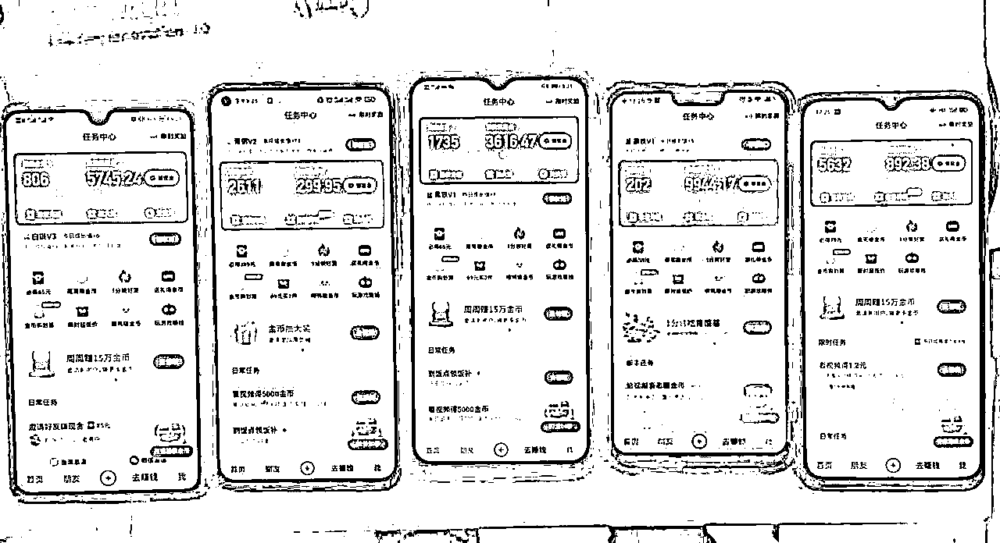
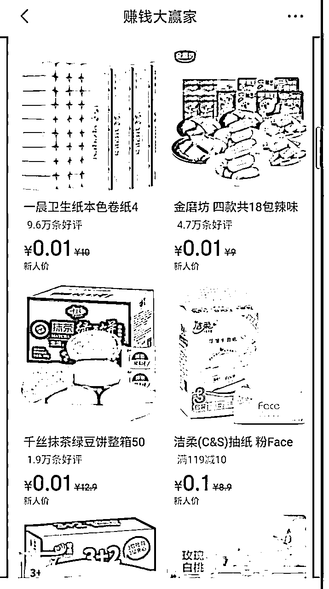
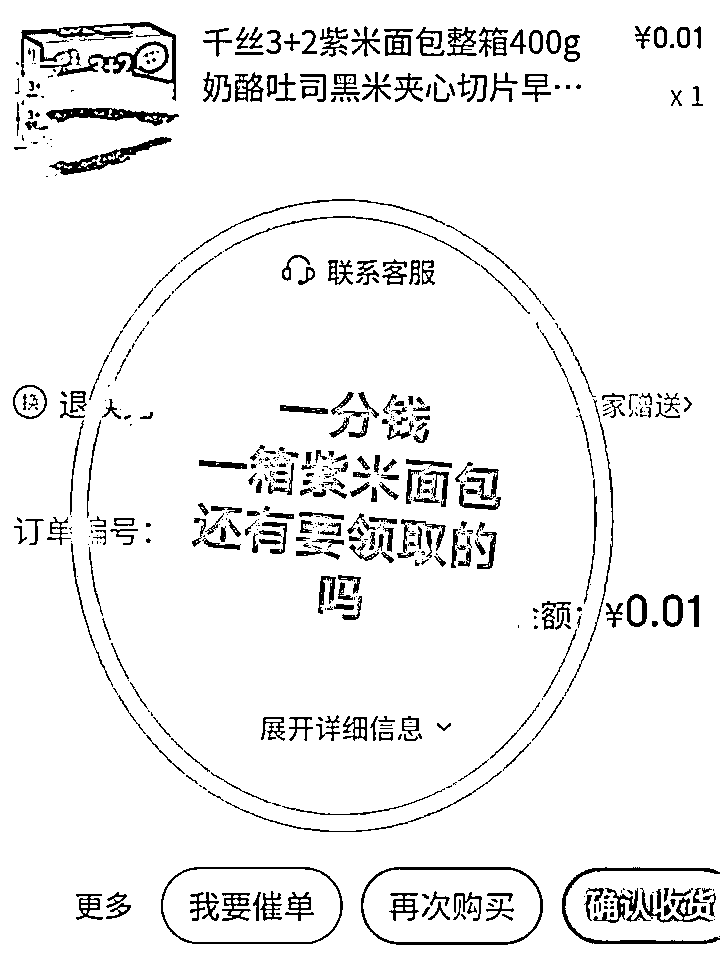

来源：https://wuhj79yd1i.feishu.cn/docx/OcMSdPOTfoNgjGx5ZG2cyozunbc
大家好，我是麦子，三期的老圈友了， 一直在做流量与变现的路上，从17年开始到如今做过宝妈粉，中医粉，老师粉，兼职粉，签名粉等等，每种流量都跑通了变现闭环，所以一直坚信得流量者得天下。
如果你还没找到合适的副业项目，可以试试线上APP拉新，毫不夸张的说，真的是可以从一部手机就能开始的副业，而且几乎0成本，天花板还很高的副业。接下来我会将我从0-1的操作过程尽量保姆级的输出，文章末尾有我对于线上拉新的思维拓展，欢迎看完一起碰撞。

一、线上APP拉新是什么
二、线上APP拉新如何做
三、线上APP拉新避坑经验
四、线上APP拉新的思维拓展
五、总结展望
最近有很多圈友分享过夸克迅雷网盘拉新的文章，这种通过网络推广的方式根据甲方的要求让用户完成APP下载注册的目的就是完成了一个有效拉新，不同的APP佣金不一样，比如下图佣金有高有低，这也是根据要求的难易程度和官方的资金实力定价的，所以在选择线上APP拉新的时候尽量选择大厂的任务，有资金，有实力，用户信任度高。
相比地推拉新，线上拉新更考验的是对流量的获取，以及对用户的转化。因为线上拉新我们不能面对面去讲解，去获取信任，更需要我们不停地对话术打磨，达到来的流量最大程度地去完成任务！下面我会通过各平台引流，标准化的文案话术去拆解拉新过程。
快手极速版APP已经地推两三年了，现在仍然有很多地推团队还在全职做这个，说明市场还是很大的，而且佣金和操作流程相比其他APP更好，所以这个还是很稳定。
先说一下获取推广快手极速版APP的渠道，最简单的方式是自己下载一下这个软件，里面有去邀请赚钱，直接生成二维码去推广就行了，考核新用户的要求就是新号码新设备，下载后看一分钟视频就给佣金。
自己申请的佣金不统一，普遍价格是拉新一个35元，也就是显示85元的，第一天到账35元，后面用户看视频还会有佣金，可以看我蓝色圈起来的说明。如果你的价格低于35，可以先做一两天，官方会根据你的拉新情况逐渐给提高价格的。另外，也可以多注册几个快手极速版，找佣金高的推广。
下面我会通过咸鱼平台和小红书平台详细拆解一下我操作的流程。
也有圈友分享过自己咸鱼下单优惠券，结果发来一个文档让下载快手极速版才能获取的风向标，这也是我们去年就在做的拉新方法，现在咸鱼搜索优惠券就会出来很多低价的商品，可以去下单看看，基本都是做的快手极速版拉新。
具体操作步骤如下:
昵称：直接引导用户去下单，因为发货都是自动发货的，减少解释的成本。
个人简介:也是和昵称一样的作用，引导用户直接拍，不满意用户申请退款，软件也可以自动同意退款。
芝麻信用:这个按理说越好的话信任度越高，但是也有信用差的号卖的很好，这个可以忽略，只要有号就可以试。
账号新老:通过测试还是尽量用老号，权重高，而且容易给曝光，新号的抵抗力还是差些，遇到恶意投诉的直接就被限制了。
你搜索优惠券就会出来很多同行的商品，对于图片和文案可以直接抄，不用搞原创，就跟我们做小红书发笔记一下，直接抄爆款的就可以了，学会模仿就成功了。
图片:我们可以直接截图同行的商品图片，通过裁剪把图片设置为1:1比例的大小。
上面是我直接截图同行商品图片，下面是通过裁剪的发布图片
注意：这里有个小细节，右下角我圈起来的地方通过截图一般都是有水印的，我们在发布商品的时候可以加上贴纸盖住别人的水印，如下图：
文案:这个直接复制粘贴就可以了，也很简单。
位置:我们可以设置全国各地，尽量选择发一二线城市，流量更多。
分类:咸鱼一般会自动推荐分类，直接选择就行。
价格:一般是设置1-3元，可以参考同行设置。
这样商品就上架完了，每天都坚持上架商品，晚上尽量下架商品，每天把流量不好的下架，直到留下的商品数据都是比较好的。
这个可以参考同行的自动回复话术，也可以自己设置，自动回复就是尽量让用户自动去下单，减少我们的回复沟通成本。

推荐使用阿奇索自动发货软件:https://aldsidle.agiso.com/
新用户注册会先赠送7天，可以免费试用，所以可以用一周时间去调试设置好。
这个软件主要用两个功能，一个是自动发货，一个是自动同意退款。
自动发货:可以设置全店统一发货，因为不管用户拍下哪个商品，都是发给他要下载快手极速版的文档教程。
自动同意退款:有人看到文档后会申请退款，通过软件设置好后可以自动同意，这样用户可以很快收到退款，避免有人会恶意投诉。
右上角有详细的软件使用教程，可以主要看一下上面两个功能如何设置的，再有问题可以联系客服。
这个软件可以随时看到咸鱼商铺的下单数量，把自动补单打开，以免我们店铺商品爆了，下单数量超过200，不能自动发送文档了。

最后补充一下，如果在卖货过程中咸鱼账号被封，但是已经开了这个会员还没到期，可以去找客服退款，因为这个平台没有申请退款页面，也是通过跟客服沟通才知道的，所以能省则省。
这个就比较简单了，直接去咸鱼拍几个同行的商品，他们都会自动发给你文档，我们只需要把他们的复制到我们自己的文档里就行了，可以用飞书文档，腾讯文档等等。
参考文档:《各类年卡会员兑换流程》 https://docs.qq.com/doc/DTmZBUGNJQktISEt2?dver=
以上都设置好，你就可以等着用户下单，软件自动发货，用户扫码下载，你的快手钱包自动增长啦！
相信大家看完咸鱼平台的快手极速版拉新一定有所感悟了，有了一定的思路。接下来我会继续拆解我们如何在小红书搞流量引导私域做快手拉新。
有了咸鱼平台的经验，我们知道了快手APP拉新的新用户大部分都是年轻的用户群体，所以，要做年轻群体喜欢的图文，而且对于他们来说最好有专属的性质，他们会更愿意加到微信，更愿意去下载APP。
我们选择的是艺术签名方向，因为年前的时候在一个付费社群有人分享过这个方向，说是只要发就会有流量，所以就去尝试了，流量真的挺猛的，而且基本是学生群体，也比较符合，由此我想到的方向还有头像，壁纸，表情包等等都可以尝试。
如何去制作艺术签名的图文呢？肯定是越简单越好，才更容易复制，先看看这个方向的相关图文笔记。
签名图片获取方法：我们可以去抖音，快手的直播间搜索艺术签名，就会看到很多在直播的主播在写签名，我们只需要在他们写完签名后截图，这样我们每天的素材就可以不重复而且很容易就有了。
直接上视频教程，这是我们给团队伙伴录制的教程，看完基本就明白了。
注意事项
①，图片比例设置为3:4或者1:1
②，封面图片最好是4-6张签名，通过美图秀秀就可以拼图，这样流量会好一点。
③，发布时间要在7点以后，学生群体都是晚上才有时间看手机，流量会更好。
小红书有很多方法可以引流粉丝到微信，可以搜索一下其他人写的小红书引流文档，都很全了，我们主要通过小红书群聊的方式引流，如果私信图片的话有一定的封号风险，也因为流量大挨个去回私信图片引导到微信而限流过，所以优先推荐小红书群。

有粉丝加到微信后，我们基本都是统一的话术，先简单打个招呼咨询是不是需要签名，都会回复是的，然后我们不管他是不是新用户，都会按照我们的教程去领取签名，简单来说就是下载APP，扫我们的邀请码领取签名，所以这样的方式转化下载的也很高。至于如何给来的粉丝交付？我们会让他第二天在打开快手看看，然后给你签名，签名可以通过软件去设计，也可以直接给用户软件让他们自己去设计，交付可以更简单。
以上是小红书平台做拉新的整个复盘，制作一篇笔记顶多5分钟，引导加微信后通过好友和自动回复消息都可以搭配软件自动实现，私域流量的好处不用多说了，后期多次变现就看自己的本事了。
先来介绍一下京喜特价APP，是京东旗下的特价版，和抖音一分购类似，对于新用户都会有优惠券，用户可以1分钱薅羊毛，推广人还能获得佣金，所以是双方互利的。

下面我会继续拆解我从小红书平台做惊喜特价拉新的全过程，原理和小红书拉新快手极速版类似，也是非常简单。
通过小红书平台做京喜特价拉新也是源自那些做淘客的账号，他们的图文都是低价买东西的，突然想到京喜特价新用户几乎都是一分钱就能买到东西的，素材可以根据商品一直去发就行了。
一分钱的商品很多，我最终选择了一分钱的紫米面包，还是依靠了快手拉新的经验，这个商品应该可以吸引更多年轻群体，而且每个人都可以买，受众广，所以就选择了紫米面包。具体图文也是非常简单，看图片：


图片制作拆解：一分钱购买面包的订单截图+京东淘宝买家秀的面包评价图片+醒目的文字说明。
主图就用上面的图片，后面可以在加一些面包实物图，文案参考其他薅羊毛的账号复制粘贴，突出一分钱买一大箱紫米面包就行。具体发布流程参考上面签名图文制作发布的流程。
还是用了群聊引流的方法，有需要的引导进群，然后通过群聊发图片引流到微信，具体参考签名的，就不重复写了。
看到这里可能不用我说你就知道怎么做了，参考签名的，一模一样的路子，换汤不换药，一边转化拉新，一边就把这些爱薅羊毛的私域积累了，后期挖掘他们更大的价值，你应该懂得！
渠道的重要性不用多说应该都知道，了解拉新这个行业也两三年了，线上线下都做过，最高的时候月佣金超10w，没遇到过跑路，为什么能一直遇到靠谱的人？因为人不变，时间长了你们就会很熟悉很信任了。对于新人刚开始可以各种渠道测试下，挑选一两个觉得靠谱的人一直跟着就行了，别因为这家多1快，那家多2快就跟着跑，这样下来很难把自己的后端稳定，当你想放大的时候都会有后顾之忧！
不管是咸鱼拉新快手还是小红书拉新京喜都遇到过封号，做互联网想要一直不封号很难，只能尽量去避免。接下来说说我踩过的坑，祝你永不封号！
①尽量减少回复，因为你回复的越多，暴露你想要拉新的记录越多，一不小心被用户举报了，平台就会说你脱离平台给你违规。这就需要你把最开始说的账号资料设置好，自动回复好好去琢磨，达到让用户不用问直接下单的效果！
②如果一旦违规，也不能放弃这个号，我们可以申诉，一般第一次会申诉失败，我们要继续打客服坚持我们的立场去申诉，还有可能失败，就继续打客服去讲，这可能考验我们的耐心与坚持了。
我自己有个账号被别人恶意投诉两次，每次我都申诉解开了。用户说是扫我的码损失了3000块钱，平台也把我支付宝冻结了3000块钱，我每次都至少打了4次客服，要求和用户对质，让用户联系我，最后可能因为用户自己心虚，或者平台审核人员重新审核了，都把账号解开了。
③每个人可以注册3个咸鱼号，发布商品都需要绑定支付宝和实人认证。如果遇到账号长期被封，可以找接码平台把自己手机号释放，然后咸鱼绑定的支付宝如果不常用可以注销，这样咸鱼就解绑你的支付宝名额了。如果是常用支付宝，需要先换绑个新注册的在注销。
① 账号每天浏览量都挺好，突然有一天不好了，也没有收到违规提示，说明你的账号大概率被限流了，可以自己检测，方法如下：我-左上角-设置-官方认证-企业认证
如果出现违规，在这个页面就会提醒你账号违规了，不能进行企业认证。

② 发的薅羊毛图文尽量多样化一些，我那个账号流量很好，但是我就一直怼面包这个品了，可能触碰到平台规则 说我虚假订单，后面发作品很容易就被违规处理。所以还是要对平台柔和一些，别上来就简单粗暴的怼。
③ 小红书回复引流一定要及时，加上微信也尽量及时回复，这样才能最大化触达用户，也能避免炸群，恶意投诉。
④ 记住如果被封或者违规限流了，可以用接码平台换绑释放手机号继续注册新号，也可以注销直接重新注册，小红书就是这么狂野。
更多的不说了，自己搜索一下就会出来很多关于平台账号如何养号避免被封的忠告，可能来来回回就是那些，但更需要我们拼的是精细化，是执行力。
我觉得需要你的是执行力，思维迁移能力。至于执行力，按照我上面说的，你可能很快就赚到第一块钱，所以只要做就行。
至于思维迁移能力，我教你的是方法，我也尽量把我从0-1的过程复盘，需要你自己去感悟，那么如何思维迁移？
比如：京喜拉新既然这么便宜，你去咸鱼挂商品是不是容易卖爆？我用签名去当钩子做快手拉新，那现在ai绘画这么火，流量很大，你是不是可以照搬方法去做？我用咸鱼还有小红书平台去做拉新，你熟悉PDD，抖音，是不是也可以在PDD发优惠券，在抖音发壁纸头像等视频去拉新？我做的京喜还有快手，但是你有司机资源，是不是可以做网约车司机拉新？
我认为拉新的天花板很高，玩法有很多，在这么大的市场下各显神通。
当自己跑通一个项目后，往往都会考虑放大，招团队，这里我建议你低成本的放大。因为拉新有很大的不稳定性，这个APP这个月可以做，可能下个月就不能做了，但是快手极速版一直坚挺，值得信赖。
再说说如何低成本的放大？可以招线上兼职，我们目前跑通了线上兼职的模式，真的是花小钱，办大事。你可以让兼职去代发给佣金，找100个兼职，直接就有100个账号供你使用，你可以很快测试出来自己的思路方向对不对，既节省金钱，更重要是节省你的时间成本。
再细挖一下如何去找100个兼职，找来了之后如何管理培训，培训完后他们如何听话照做配合，这又是一个半自动化的操作流程了，期待下一篇文章见吧。
为什么说花钱呢？花钱肯定是为了更多地赚钱，这里的意思是花钱买流量做拉新变现。拿快手极速版举例，不管是咸鱼还是小红书，我们测试大概10个用户出一个新用户，这里面的10个用户是只要他咸鱼下单或者直接加到我们微信的，一个快手新用户最低35，有次留或者七流更高，这样算下来单粉价格在3-4块钱，那么我们只需要去购买合适的粉丝就行了，因为起来量之后，都可以靠软件去自动转化，后端维护成本也很低。那么拉新完，这些粉丝是不是还能二次变现，能挖掘出来多少价值就看自己了！
还记得前两年地推拉新火爆圈子，很多人入局过，但因着种种原因继续干的少之又少，如何在困境中求生存，可能更需要是思维的拓展，认知的提升，这样才能打开一个行业的新玩法。所以不管什么副业，先开始再说，因为你走的每一步都是经验的积累，认知的提升！
写了这么多，看完之后我更希望是对你的思维拓展有所帮助，因为我们每个人都是熟悉自己做过的事情，也更加专注于自己做过的事情，当自己熟悉的领域增加了一些新的思维拓展，相信一定有质的飞跃。